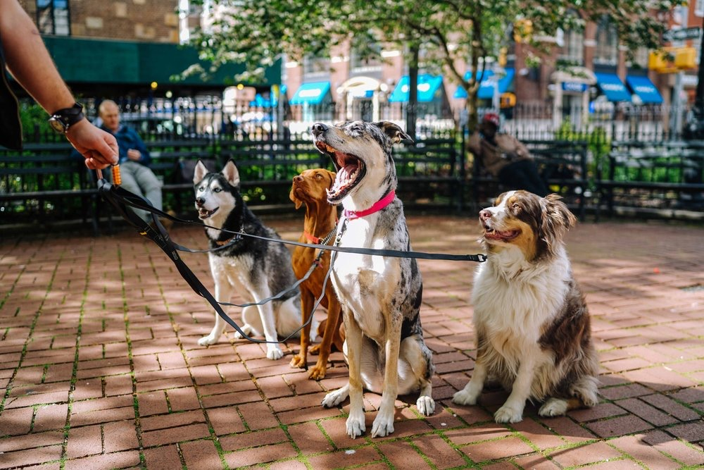

5 Signs You’re Ready to Start Off-Leash Training

Off-leash reliability is the last step, not the first. Here's how to know your dog has the foundation to start.
1. Loose leash walking is consistent
Your dog walks beside you without pulling in most environments, not just in the backyard with no distractions.
2. Recall works around mild distractions
They come when called even when there's something mildly interesting nearby, not just in a quiet room.
3. Sit, down, and place are reliable
These basics hold up under everyday distractions, not just during a dedicated training session.
4. They can hold a stay while you walk away
A dog that breaks a stay the moment you move isn't ready for the freedom of being off leash yet.
5. They check in with you without being asked
Dogs that are ready for off-leash work tend to glance back at their handler periodically instead of forging ahead.
How our Three Week On/Off Leash Program builds this
This program builds on the two-week on-leash foundation and adds distance commands like sit and down from farther away, along with supervised off-leash control in appropriate public areas. Weekly follow-up sessions are recommended to keep it sharp.